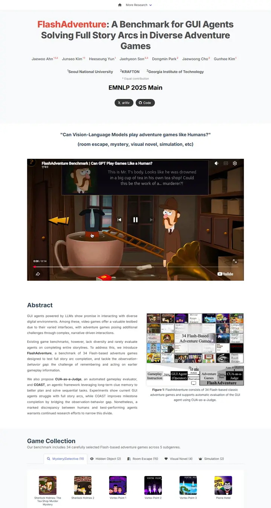

FlashAdventure: A Benchmark for GUI Agents Solving Full Story Arcs in Diverse Adventure Games
An arcade lobby on a pale grey morning: one tomato-red game title, a big cartoon cutscene on the screen, and a shelf of cartridge thumbnails behind boxed tabs.

Checked against the rendered page. Hero title and author names compute to rgba(0,0,0,0.7) via Bulma is-light rules, not the declared #2c3e50; game tile heights are set by script (184px).
Why it is here
A bold accent-coloured title, a large video hero and a two-column abstract with a figure, plus a tabbed game collection with thumbnails. Lively and well structured for a demo-heavy benchmark.
Overview
Color Palette
Typography
Inter
FlashAdventure: A Benchmark for GUI Agents Solving Full Story Arcs in
Abstract · Method · Results · BibTeX — 0123456789
Courier New
FlashAdventure: A Benchmark for GUI Agents Solving Full Story Arcs in
Abstract · Method · Results · BibTeX — 0123456789
Spacing & Shape
Page Modules
Guidelines
More like this

Scaling Text-Rich Image Understanding via Code-Guided Synthetic Multimodal Data Generation
A university press catalogue: small-caps serif title, a colour wheel of specimens and an earthy bar chart.

DICE-BENCH: Evaluating the Tool-Use Capabilities of Large Language Models in Multi-Round, Multi-Party Dialogues
A Nerfies page with a game-box cover: a charcoal dice banner stamps the identity, then pastel brand-tinted pills and a grey carousel strip carry you into a quiet two-column method read.

TUNA: Comprehensive Fine-grained Temporal Understanding Evaluation on Dense Dynamic Videos
A benchmark that leads with its scoreboard: a fish-logo small-caps wordmark, a gradient venue line, then a full-width grey-headed leaderboard with zebra rows and blue model links.

Gesturing Toward Abstraction: Multimodal Convention Formation in Collaborative Physical Tasks
A seminar handout on clean paper: a big soft headline, six charcoal tabs, and a teal-and-magenta comic strip of hands explaining blocks.

Making Multimodal LLMs Reliable Chart Data Extractors: A Benchmark and Training Framework
A lab notebook opened to its best page: a framed video like a monitor bezel, emoji in the headline, and every figure pinned with a soft shadow.

What If Moderation Didn't Mean Suppression? A Case for Personalized Content Transformation
A quiet reading room with a purple ribbon on the lectern: slate sans headlines, Garamond prose, and one warm amber note pinned to the wall.